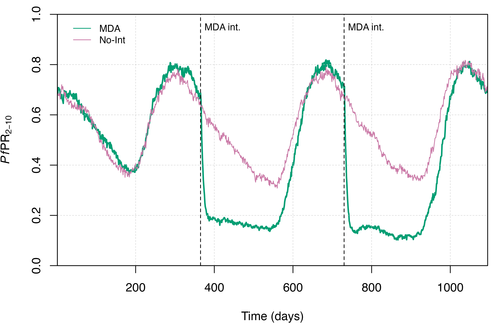
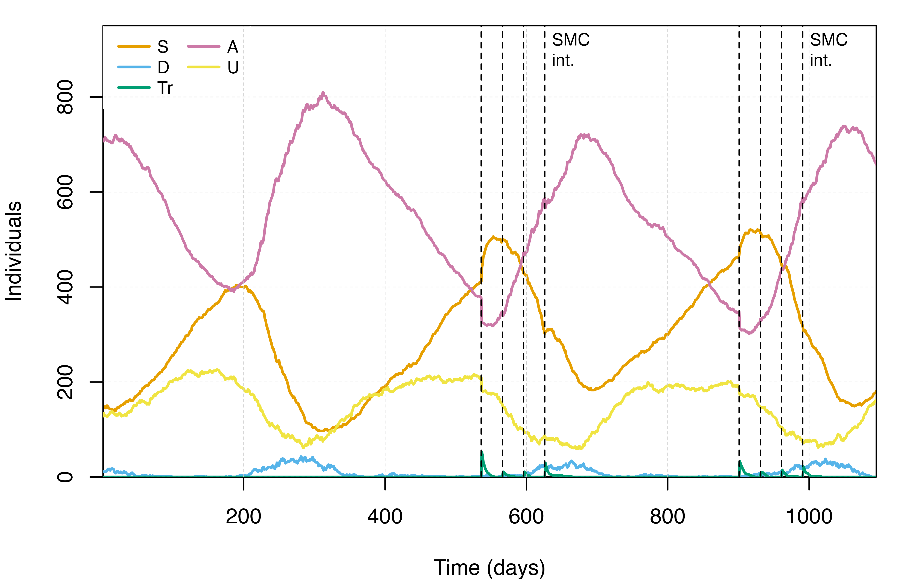
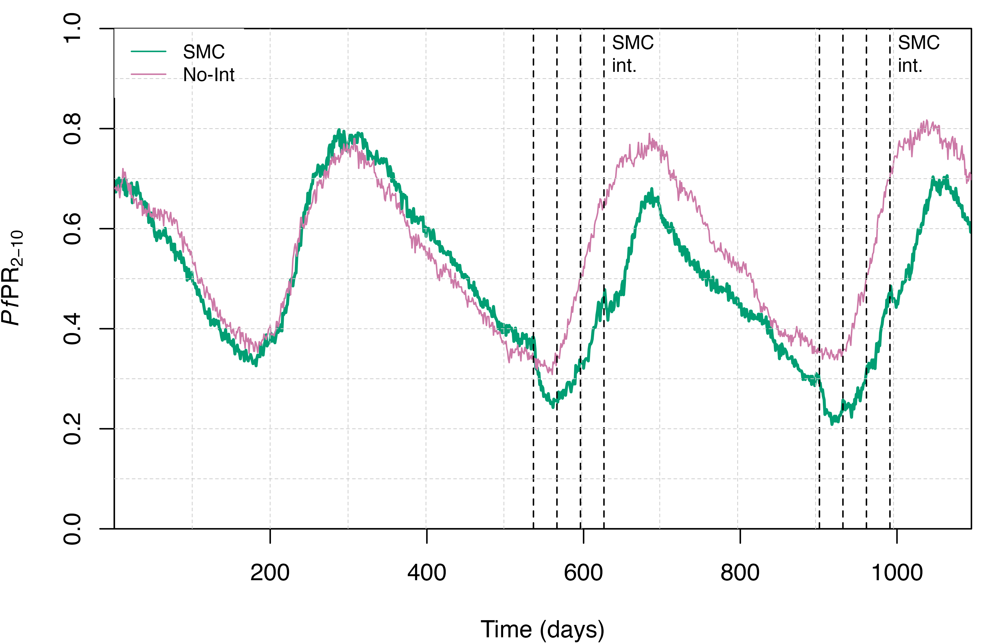

Mass Drug Administriation and Chemoprevention
MDA.Rmd
# Load the requisite packages:
library(malariasimulation)
# Set colour palette:
cols <- c("#E69F00", "#56B4E9", "#009E73", "#CC79A7","#F0E442", "#0072B2", "#D55E00")Malaria chemoprevention encompasses a suite of strategies for reducing malaria morbidity, mortality, and transmission through the treatment of at-risk populations with antimalarial drugs. Three such strategies are mass drug administration (MDA), seasonal malaria chemoprevention (SMC), and perennial malaria chemoprevention (PMC). MDA attempts to simultaneously treat an entire population, irrespective of their infection risk or status. SMC targets children aged 3-59 months with a course of an antimalarial through the peak malaria transmission season. PMC is designed for settings with perennially high transmission and seeks to administer a full antimalarial course at defined intervals irrespective of age or disease status.
malariasimulation enables users to simulate the effects
of chemoprevention strategies on malaria transmission, and provides the
flexibility to design and simulate a range of MDA/SMC/PMC campaigns for
a suite of antimalarial drugs. Specifically, users are able to load or
specify parameters describing both the characteristics of the
antimalarial(s) (e.g. drug efficacy, prophylactic profile) and their
distribution (e.g. coverage, distribution timing, and the section of the
population to treat). This vignette provides simple, illustrative
demonstrations of how MDA and SMC campaigns can be set-up and simulated
using malariasimulation. The functionality to simulate PMC
campaigns is also built into malariasimulation via the
set_pmc() function, but we do not demonstrate the use of
PMC in this vignette (for further information on their use, see set_pmc).
Mass Drug Administration
To illustrate how MDA can be simulated using
malariasimulation, we will implement a campaign that
distributes a single dose of sulphadoxine-pyrimethamine amodiaquine
(SP-AQ) to 80% of the entire population once a year over a two year
period, initiated at the end of the first year.
Parameterisation
The first step is to generate the list of
malariasimulation parameters using the
get_parameters() function. Here, we’ll use the default
malariasimulation parameter set (run
?get_parameters() to view), but specify the seasonality
parameters to simulate a highly seasonal, unimodal rainfall pattern
(illustrated in the plot of total adult female mosquito population
dynamics below). To do this, we set model_seasonality to
TRUE within get_parameters(), and then tune
the rainfall pattern using the g0, g, and
h parameters (which represent fourier coefficients). In the
malariasimulation model, rainfall governs the time-varying
mosquito population carrying capacity through density-dependent
regulation of the larval population and, therefore, annual patterns of
malaria transmission. Next, we use the set_equilibrium()
function to tune the initial human and mosquito populations to those
required to observe the specified initial EIR.
# Establish the length of time, in daily time steps, over which to simulate:
year <- 365; years <- 3
sim_length <- years * year
# Set the size of the human population and an initial entomological inoculation rate (EIR)
human_population <- 1000
starting_EIR <- 50
# Use the simparams() function to build the list of simulation parameters and then specify
# a seasonal profile with a single peak using the g0, g, and h parameters.
simparams <- get_parameters(
list(
human_population = human_population,
model_seasonality = TRUE,
g0 = 0.284596,
g = c(-0.317878,-0.0017527,0.116455),
h = c(-0.331361,0.293128,-0.0617547)
)
)
# Use the set_equilibrium() function to update the individual-based model parameters to those
# required to match the specified initial EIR (starting_EIR) at equilibrium:
simparams <- set_equilibrium(simparams, starting_EIR)Interventions
Having established a base set of parameters (simparams),
the next step is to add the parameters specifying the MDA campaign. We
first use the set_drugs() function to update the parameter
list (simparams) with the parameter values for the drug(s)
we wish to simulate, in this case using the in-built parameter set for
SP-AQ (SP_AQ_params). Note that the
malariasimulation package also contains in-built parameter
sets for dihydroartemisinin-piperaquine (DHA_PQP_params)
and artemether lumefantrine (AL_params), and users can also
define their own drug parameters.
We then define the time steps on which we want the MDA to occur
(stored here in the vector mda_events for legibility), and
use the set_mda() function to update the parameter list
with our MDA campaign parameters. set_mda() takes as its
first two arguments the base parameter list and the time steps on which
to schedule MDA events. This function also requires the user to specify
the proportion of the population they want to treat using
coverages, as well as the age-range of the population we
want to treat using min_ages and max_ages,
for each timestep on which MDA is scheduled. Note that this
enables users to specify individual events to have different drug,
coverage, and human-target properties. The drug argument
refers to the index of the drug we want to distribute in the MDA in the
list of parameters (in this demonstration we have only added a single
drug, SP-AQ, using set_drugs(), but we could have specified
additional drugs).
# Make a copy of the base simulation parameters to which we can add the MDA campaign parameters:
mdaparams <- simparams
# Update the parameter list with the default parameters for sulphadoxine-pyrimethamine
# amodiaquine (SP-AQ)
mdaparams <- set_drugs(mdaparams, list(SP_AQ_params))
# Specify the days on which to administer the SP-AQ
mda_events <- (c(1, 2) * 365)
# Use set_mda() function to set the proportion of the population that the MDA reaches and the age
# ranges which can receive treatment.
mdaparams <- set_mda(mdaparams,
drug = 1,
timesteps = mda_events,
coverages = rep(.8, 2),
min_ages = rep(0, length(mda_events)),
max_ages = rep(200 * 365, length(mda_events)))Having generated a base, no-intervention parameter set
(simparams) and a version updated to define an MDA campaign
(mdaparams), we can now use the
run_simulation() function to run simulations for scenarios
without interventions and with our MDA campaign.
Simulation
# Run the simulation in the absence of any interventions:
noint_output <- run_simulation(sim_length, simparams)
# Run the simulation with the prescribed MDA campaign
mda_output <- run_simulation(sim_length, mdaparams)Visualisation
The run_simulation() function returns a dataframe
containing time series for a range of variables, including the number of
human individuals in each infectious state, and the number of people and
detected cases in children aged 2-10. The plots below illustrate how the
effect of an MDA campaign on the malaria transmission dynamics can be
visualised. The first presents the distribution of people among the
infectious states in the MDA simulation. The second compares the
prevalence of malaria in children aged 2-10 years old
(PfPR2-10) between the no-intervention and MDA
scenarios simulated.
# Store the state names, and labels and colours with which to plot them:
states <- c("S_Count", "D_count", "Tr_count", "A_count", "U_count")
state_labels <- c("S", "D", "Tr", "A", "U")
# Open a new plotting window:
plot.new(); par(mar = c(4, 4, 1, 1), new = TRUE)
# Plot the time series
plot(x = mda_output$timestep, y = mda_output$S_count,
type = "l", col = cols[1], lwd = 2,
ylim = c(0, 950), ylab = "Individuals", xlab = "Time (days)",
xaxs = "i", yaxs = "i", cex = 0.8)
# Overlay the time-series for other states
for(i in 1:(length(states)-1)) {
lines(mda_output[,states[i+1]], col = cols[i+1], lwd = 2)
}
# Add vlines to show when SP-AQ was administered:
abline(v = mda_events, lty = "dashed", lwd = 1.5)
text(x = mda_events+10, y = 900, labels = "MDA int.", adj = 0, cex = 0.8)
# Add gridlines:
grid(lty = 2, col = "grey80", nx = NULL, ny = NULL, lwd = 0.5); box()
# Add a legend:
legend("topleft",
legend = c(state_labels),
col = c(cols[1:5]), lty = c(rep(1, 5)),
lwd = 1, cex = 0.8, box.col = "white", ncol = 2, x.intersp = 0.5)
# Open a new plotting window and add a grid:
plot.new(); par(mar = c(4, 4, 1, 1), new = TRUE)
# Plot malaria prevalence in 2-10 years through time:
plot(x = mda_output$timestep,
y = mda_output$n_detect_lm_730_3650/mda_output$n_age_730_3650,
xlab = "Time (days)",
ylab = expression(paste(italic(Pf),"PR"[2-10])), cex = 0.8,
ylim = c(0, 1), type = "l", lwd = 2, xaxs = "i", yaxs = "i",
col = cols[3])
# Add the dynamics for no-intervention simulation
lines(x = noint_output$timestep,
y = noint_output$n_detect_lm_730_3650/noint_output$n_age_730_3650,
col = cols[4])
# Add vlines to indicate when SP-AQ were administered:
abline(v = mda_events, lty = "dashed", lwd = 1)
text(x = mda_events+10, y = 0.95, labels = "MDA int.", adj = 0, cex = 0.8)
# Add gridlines:
grid(lty = 2, col = "grey80", nx = NULL, ny = NULL, lwd = 0.5); box()
# Add a legend:
legend(x = 20, y = 0.99, legend = c("MDA", "No-Int"),
col= c(cols[3:4]), box.col = "white",
lwd = 1, lty = c(1, 1), cex = 0.8)
Seasonal Malaria Chemoprevention
To demonstrate how to simulate SMC in malariasimulation
, in the following section we’ll set-up and simulate a campaign that
treats 90% of children aged 3-59 months old with four doses of SP-AQ per
year. We will set the SMC campaign to begin in the second year, run for
two years, and specify the four SMC events to occur at monthly
intervals, starting two months prior to the peak malaria season.
Interventions
While the first step would typically be to establish the base set of
parameters, we can use those stored earlier in simparams.
We first store a copy of these base parameters and then use
set_drugs() to store the preset parameters for SP-AQ in the
parameter list. As SMC is conducted during the peak malaria season, we
need to use the peak_season_offset() function to determine
when the peak malaria season occurs given our specified seasonal
profile. This function reads in the parameter list, uses
g0, g, h, and
rainfall_floor to generate the rainfall profile for a
single year, and returns the day on which the maximum rainfall value
occurs. We can then take this calculated seasonal peak and time SMC
events around it. Here, we’ve specified four monthly drug administration
days per year starting two months before the seasonal peak. To
illustrate this, we can plot the total adult mosquito population size
through time which, in the absence of interventions targeting
mosquitoes, will closely match the rainfall pattern, and overlay both
the annual seasonal peak and planned SMC events. Once we’re happy with
our SMC campaign, we use the set_smc() function to update
the parameter list with our drug, timesteps,
coverages and target age group (min_ages and
max_ages).
# Copy the original simulation parameters
smcparams <- simparams
# Append the parameters for SP-AQ using set_drugs
smcparams <- set_drugs(smcparams, list(SP_AQ_params))
# Use the peak_season_offset() to calculate the yearly offset (in daily timesteps) for the peak mosq.
# season
peak <- peak_season_offset(smcparams)
# Create a variable for total mosquito population through time:
noint_output$mosq_total = noint_output$Sm_gamb_count +
noint_output$Im_gamb_count +
noint_output$Pm_gamb_count
# Schedule drug administration times (in daily time steps) before, during and after the seasonal peak:
admin_days <- c(-60, -30, 0, 30)
# Use the peak-offset, number of simulation years and number of drug admin. days to calculate the days
# on which to administer drugs in each year
smc_days <- rep((365 * seq(1, years-1, by = 1)), each = length(admin_days)) + peak + rep(admin_days, 2)
# Turn off scientific notation for the plot:
options(scipen = 666)
# Open a new plotting window,set the margins and plot the total adult female mosquito population
# through time:
plot.new(); par(new = TRUE, mar = c(4, 4, 1, 1))
plot(x = noint_output$timestep, noint_output$mosq_total,
xlab = "Time (days)", ylab = "Adult Female Mosquitos",
ylim = c(0, max(noint_output$mosq_total)*1.1),
type = "l", lwd = 2, cex = 0.8,
xaxs = "i", yaxs = "i",
col = cols[3])
# Add gridlines
grid(lty = 2, col = "grey80", nx = 11, ny = NULL, lwd = 0.5); box()
# Overlay the SMC days and the calculated seasonal peak
abline(v = smc_days, lty = "dashed", lwd = 2)
abline(v = c(0, 1, 2) * 365 + peak, lty = 2, lwd = 2, col = cols[4])
# Add a legend:
legend("topleft",
legend = c(expression("M"["Tot"]), "SMC", "Peak"),
col= c(cols[3], "black", cols[4]), box.col = "white",
lty = c(1, 2, 2), lwd = 2, cex = 0.9)
Simulations
Having generated our SMC parameter list, we can run the simulation
using the run_simulation() function.
# Run the SMC simulation
smc_output <- run_simulation(sim_length, smcparams)Visualisation
We can now plot the simulation output to visualise the effect of our SMC campaign on malaria transmission dynamics, again focusing on the distribution of people in each of the infectious states and on malaria prevalence in children aged 2-10 (PfPR2-10).
# Open a new plotting window and add a grid:
plot.new(); par(new = TRUE, mar = c(4, 4, 1, 1))
# Plot the time series of human infectious states through time under the SMC campaign
plot(x = smc_output$timestep, y = smc_output$S_count,
type = "l", col = cols[1], lwd = 2,
ylim = c(0, 950), ylab = "Individuals", xlab = "Time (days)",
xaxs = "i", yaxs = "i", cex = 0.8)
# Overlay the time-series for other human infection states
for(i in 1:(length(states)-1)) {
lines(smc_output[,states[i+1]], col = cols[i+1], lwd = 2)
}
# Add vlines to indicate when SMC drugs were administered:
abline(v = smc_days, lty = "dashed", lwd = 1)
text(x = smc_days[c(4,8)]+10, y = 900, labels = "SMC\nint.", adj = 0, cex = 0.8)
# Add gridlines:
grid(lty = 2, col = "grey80", nx = NULL, ny = NULL, lwd = 0.5)
# Add a legend:
legend("topleft",
legend = c(state_labels),
col = c(cols[1:5]), lty = c(rep(1, 5)),
box.col = "white", lwd = 2, cex = 0.8, ncol = 2, x.intersp = 0.5) 
# Open a new plotting window and add a grid:
plot.new(); par(new = TRUE, mar = c(4, 4, 1, 1))
# Plot malaria prevalence in 2-10 years through time:
plot(x = smc_output$timestep, y = smc_output$n_detect_lm_730_3650/smc_output$n_age_730_3650,
xlab = "Time (days)",
ylab = expression(paste(italic(Pf),"PR"[2-10])), cex = 0.8,
ylim = c(0, 1), type = "l", lwd = 2, xaxs = "i", yaxs = "i",
col = cols[3])
# Add the dynamics for no-intervention simulation
lines(x = noint_output$timestep,
y = noint_output$n_detect_lm_730_3650/noint_output$n_age_730_3650,
col = cols[4])
# Add lines to indicate SMC events:
abline(v = smc_days, lty = "dashed", lwd = 1)
text(x = smc_days[c(4,8)]+10, y = 0.95, labels = "SMC\nint.", adj = 0, cex = 0.8)
# Add gridlines:
grid(lty = 2, col = "grey80", nx = 11, ny = 10, lwd = 0.5)
# Add a legend:
legend("topleft",
legend = c("SMC", "No-Int"),
col= c(cols[3:4]), box.col = "white",
lwd = 1, lty = c(1, 1), cex = 0.8)